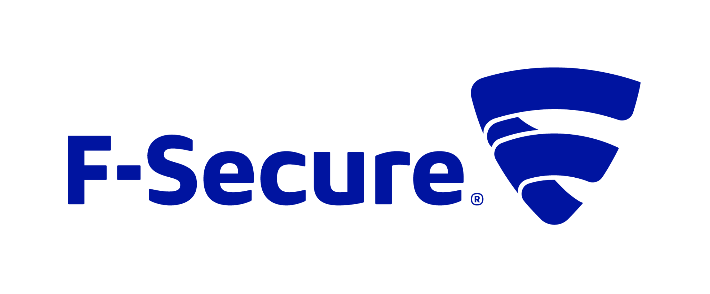
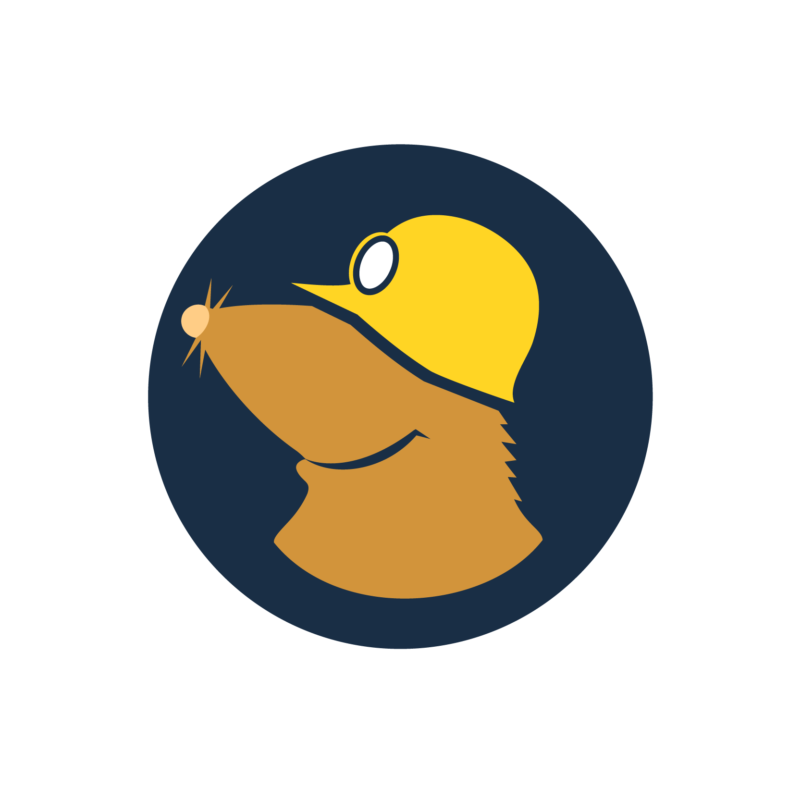

Priporočena orodja za spletno varnost
Antivirus F-Secure
F-Secure je priznano podjetje za kibernetsko varnost, ki zagotavlja širok spekter storitev in rešitev za zaščito posameznikov in organizacij pred digitalnimi grožnjami. Ustanovljeno leta 1988 in s sedežem na Finskem, si je F-Secure ustvarilo ugledno ime v industriji. Eden ključnih akterjev za uspeh F-Secure je njen lastnik Mikko Hyppönen. Mikko je znan strokovnjak za kibernetsko varnost in strasten zagovornik spletnega zasebnosti in varnosti. S svojim znanjem je odločilno prispeval k F-Securejevemu poslanstvu boja proti kibernetskemu kriminalu in razvoju inovativnih rešitev za zaščito uporabniških podatkov. Mikkovo strokovno znanje in vodstvo sta pomagala F-Secureju postati vodilni igralec na področju kibernetske varnosti, pridobiti zaupanje milijonov strank po vsem svetu.
|  |
Mullvad VPN
Mullvad VPN je visoko cenjena storitev za virtualno zasebno omrežje, ki se osredotoča na zasebnost in varnost uporabnikov. Deluje v skladu z dosledno politiko nebeleženja, kar pomeni, da ne shranjuje nobenih uporabniških podatkov ali beležk dejavnosti. Njihova zavezanost k zasebnosti je bila preizkušena, ko jih je obiskala policija v zvezi z enim njihovih uporabnikov. Vendar pa zaradi trdnih zasebnostnih praks Mullvada niso mogli pomagati oblastem, saj preprosto niso imeli nobenih uporabniških informacij, ki bi jih lahko delili. Ta incident je poudaril integriteto Mullvadovega pristopa k zasebnosti in uporabnikom zagotavlja, da njihove spletne dejavnosti ostajajo resnično anonimne in zaščitene. Mullvadova predanost ohranjanju zasebnosti uporabnikov jih postavlja v ospredje v industriji VPN-jev in ponuja mir in varnost posameznikom, ki iščejo varno in zasebno spletno izkušnjo.
|  |
Operacijski sistem ParrotOS
Parrot OS je operacijski sistem, usmerjen v varnost, ki se osredotoča na zagotavljanje zasebnosti in anonimnosti svojim uporabnikom. Eden od opaznejših zasebnostnih funkcij Parrot OS je AnonSurf.